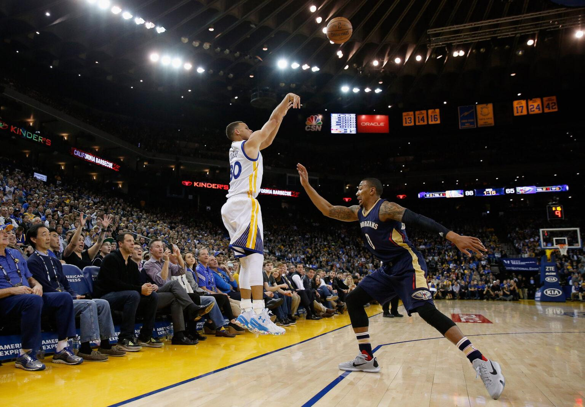
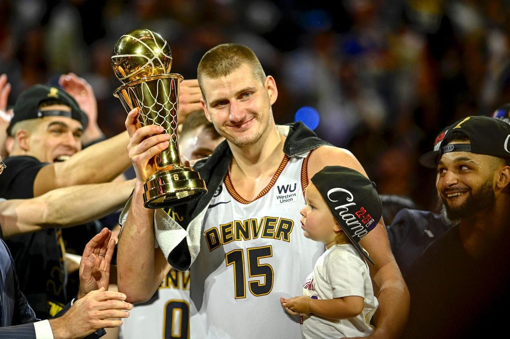
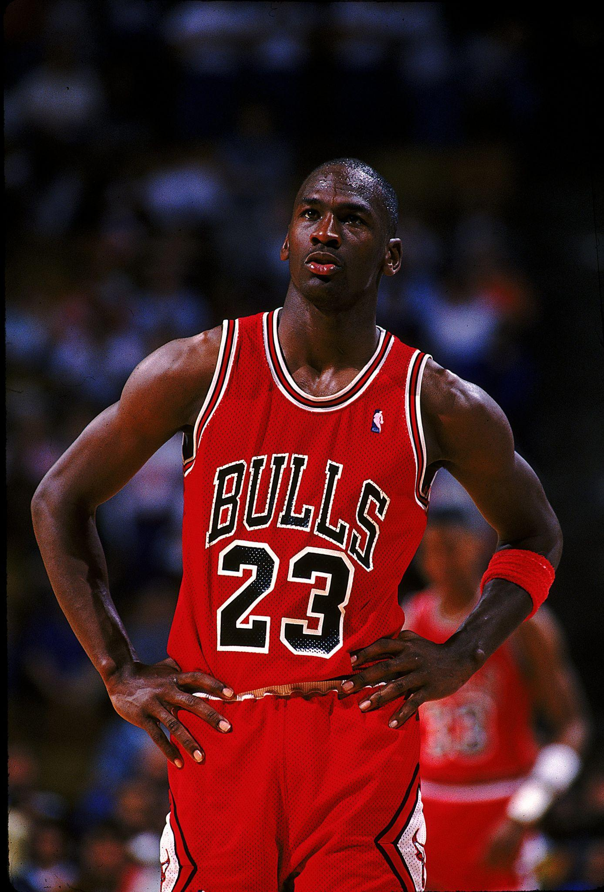

NBA vodič
Najveći timovi svih vremena
| Tim | Sezona | Omjer | NBA titula | Glavna zvijezda |
|---|---|---|---|---|
| Chicago Bulls | 1995/96 | 72-10 | Da | Michael Jordan |
| Golden State Warriors | 2016/17 | 67-15 | Da | Stephen Curry / Kevin Durant |
| Los Angeles Lakers | 1986/87 | 65-17 | Da | Magic Johnson |
| Boston Celtics | 1985/86 | 67-15 | Da | Larry Bird |
| San Antonio Spurs | 2013/14 | 62-20 | Da | Tim Duncan / Kawhi Leonard |
Galerija NBA legendi





GOAT Košarke Michael Jordan
Klikni na crvenu tačku.

Michael Jordan — sve o legendi
Michael Jordan smatra se najvećim košarkašem svih vremena i jednom od najvećih sportskih ikona u historiji. Rođen je 17. februara 1963. godine u Brooklynu, New York. Najveći dio karijere proveo je u Chicago Bullsima gdje je promijenio historiju NBA lige.
NBA karijera
- Chicago Bulls (1984–1993, 1995–1998)
- Washington Wizards (2001–2003)
- 6 NBA titula
- 6x NBA Finals MVP
- 5x NBA MVP
- 14x NBA All-Star
- 10x najbolji strijelac NBA lige
- Defensive Player of the Year 1988.
Dominacija u NBA ligi
Jordan je bio poznat po nevjerovatnoj brzini, eksplozivnosti, zakucavanjima i sposobnosti da postiže poene kada je najpotrebnije. Njegova rivalstva sa ekipama kao što su Detroit Pistons, New York Knicks i Utah Jazz obilježila su NBA devedesetih godina.
Sa Scottiejem Pippenom i trenerom Philom Jacksonom stvorio je jednu od najvećih dinastija u historiji sporta. Chicago Bullsi osvojili su dva "three-peata", odnosno dvije serije po tri uzastopne titule.
Globalni uticaj
Michael Jordan učinio je NBA globalno popularnom. Njegove Air Jordan patike postale su simbol kulture i sporta širom svijeta. Bio je član legendarnog Dream Teama iz 1992. godine koji je osvojio olimpijsko zlato.
Naslijeđe
Jordan je ostao simbol pobjedničkog mentaliteta, discipline i liderstva. Mnogi igrači današnjice, uključujući Kobea Bryanta i LeBrona Jamesa, navode ga kao najveći uzor u karijeri.
Zanimljivosti o NBA erama
-
Početna NBA era (1946–1960)
- NBA liga osnovana je 1946. godine.
- Košarka je tada bila manje popularna nego danas.
- Igralo se mnogo sporije nego u modernoj eri.
- George Mikan bio je prva velika NBA zvijezda.
- Minneapolis Lakersi dominirali su ligom.
- Timovi su imali manje igrača i manji budžet.
- Televizijski prenosi bili su rijetki.
- Pravila igre bila su drugačija nego danas.
- Nije postojao šut za tri poena.
- Ova era postavila je temelje moderne NBA lige.
-
Era Boston Celticsa (1960–1980)
- Boston Celticsi osvojili su veliki broj titula.
- Bill Russell bio je lider dominantne ekipe.
- Russell je poznat po sjajnoj odbrani i skokovima.
- Celticsi su osvojili 11 titula u 13 sezona.
- Rivalstvo sa Lakersima postalo je veoma poznato.
- NBA je postajala sve popularnija u Americi.
- Wilt Chamberlain postavio je brojne rekorde.
- Utakmice su bile veoma fizički zahtjevne.
- Timska igra bila je važnija od individualizma.
- Ova era donijela je prve velike NBA dinastije.
-
Magic vs Bird era (1980–1990)
- Rivalstvo Magica Johnsona i Larryja Birda obilježilo je eru.
- Los Angeles Lakersi i Boston Celticsi dominirali su ligom.
- NBA popularnost naglo je porasla širom svijeta.
- Magic Johnson bio je poznat po asistencijama.
- Larry Bird bio je jedan od najboljih šutera.
- Finala između Lakersa i Celticsa bila su legendarna.
- Televizijski prenosi postali su veoma gledani.
- NBA je dobila više sponzora i medijske pažnje.
- Igra je postala brža i atraktivnija.
- Ova era pripremila je dolazak Michaela Jordana.
-
Jordan era (1990–1998)
- Michael Jordan postao je najveća NBA zvijezda.
- Chicago Bullsi osvojili su šest titula.
- Jordan je osvojio pet MVP nagrada.
- Njegova zakucavanja postala su legendarna.
- NBA je postala globalno popularna.
- Bullsi su imali sjajan tim sa Scottiejem Pippenom.
- Jordan je bio poznat po pobjedničkom mentalitetu.
- Finala Bullsa pratili su milioni gledalaca.
- Air Jordan patike postale su svjetski poznate.
- Mnogi smatraju Jordana najvećim igračem svih vremena.
-
Post Jordan era (1999–2010)
- Nakon Jordana NBA je dobila nove zvijezde.
- Kobe Bryant i Shaquille O'Neal dominirali su ligom.
- Los Angeles Lakersi osvojili su tri uzastopne titule.
- Timovi su igrali veoma jaku odbranu.
- Tim San Antonio Spurs osvojio je više titula.
- Timska košarka postala je veoma važna.
- Allen Iverson bio je simbol ulične košarke.
- LeBron James pojavio se kao nova superzvijezda.
- NBA je dobila mnogo internacionalnih igrača.
- Ova era povezala je staru i modernu NBA košarku.
-
LeBron era (2010–2018)
- LeBron James dominirao je NBA ligom.
- Miami Heat osvojio je dvije titule zaredom.
- LeBron je poznat po snazi i inteligenciji.
- Golden State Warriorsi postali su nova sila.
- Stephen Curry promijenio je način šutiranja trojki.
- NBA igra postala je mnogo brža.
- Šut za tri poena postao je najvažnije oružje.
- Kevin Durant pridružio se Warriorsima.
- Finala Warriorsa i Cavaliersa bila su veoma popularna.
- Ova era donijela je modernu napadačku košarku.
-
Moderna NBA era (2018–danas)
- NBA danas ima mnogo mladih zvijezda.
- Nikola Jokić postao je jedan od najboljih centara.
- Luka Dončić impresionira svojim talentom.
- Timovi šutiraju više trojki nego ikada.
- Košarka je postala veoma brza i efikasna.
- Internacionalni igrači imaju veliku ulogu.
- Analitika se koristi u taktici timova.
- Victor Wembanyama smatra se velikim talentom.
- NBA ima ogromnu popularnost na društvenim mrežama.
- Moderna era nastavlja razvijati globalnu košarku.